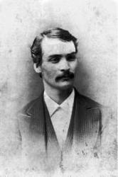

|
|
|
|
1 When all my labors and trials are o’er, Refrain: 2 When by the gift of His infinite grace, 3 Friends will be there I have loved long ago; |
1、有一日当我们劳碌已尽 阿门 |
|
https://www.zanmeishige.com/tab/14049.html?songbook=1&index=376
|
|
|
|
|


https://youtu.be/GkBIjNrFbWY https://youtu.be/-nba1C1yEBw -
O That Will Be Glory Acapeldridge https://youtu.be/41Yl1KzSNdA -
O That Will Be Glory Charles Gabriel, 1900
https://youtu.be/T05rWx0uwTM - Marshall Hall - O That Will be Glory
https://youtu.be/FKEv1fGDii8
| ext: | O That Will Be Glory |
| Author: | Charles H. Gabriel, 1856-1932 |
| Tune: | [When all my labors and trials are o'er] |
| Composer: | Charles H. Gabriel, 1856-1932 |
| Short Name: | Chas. H. Gabriel |
| Full Name: | Gabriel, Chas. H. (Charles Hutchinson), 1856-1932 |
| Birth Year: | 1856 |
| Death Year: | 1932 |
Pseudonyms: C. D. Emerson, Charlotte G. Homer, S. B. Jackson, A. W. Lawrence, Jennie Ree

=============
For the first seventeen years of his life Charles Hutchinson Gabriel (b. Wilton, IA, 1856; d. Los Angeles, CA, 1932) lived on an Iowa farm, where friends and neighbors often gathered to sing. Gabriel accompanied them on the family reed organ he had taught himself to play. At the age of sixteen he began teaching singing in schools (following in his father's footsteps) and soon was acclaimed as a fine teacher and composer. He moved to California in 1887 and served as Sunday school music director at the Grace Methodist Church in San Francisco. After moving to Chicago in 1892, Gabriel edited numerous collections of anthems, cantatas, and a large number of songbooks for the Homer Rodeheaver, Hope, and E. O. Excell publishing companies. He composed hundreds of tunes and texts, at times using pseudonyms such as Charlotte G. Homer. The total number of his compositions is estimated at about seven thousand. Gabriel's gospel songs became widely circulated through the Billy Sunday-Homer Rodeheaver urban crusades.
Bert Polman
Tune Information
| Title: | [When all my labors and trials are o'er] |
| Composer: | Chas. H. Gabriel (1900) |
| Meter: | 10.10.10.10 with refrain |
| Incipit: | 51765 43513 32132 |
| Key: | A♭ Major |
| Copyright: | Public Domain |
第376首 劳碌已尽歌 GLORY FOR ME _加布里埃尔
经文：“我听见从天上有声音说：‘你要写下，从今以后，在主里面而死的人有福了!’圣灵说：‘是的，他们息了自己的劳苦，作工的果效也随着他们’”(启1 4：13)。
加布里埃尔(事略参阅第2 4 4首)是本世纪2 O年代美国布道团中最受欢迎的歌唱家和作曲家。这首诗的词和曲都是他的得意之作。
1900年有一天，加布里埃尔在密苏里州圣路易市遇见一位信徒名叫卡德。这个人有个特点，就是从不发愁，他见人总是满脸笑容，听道时常常喊着“荣耀”，祷告结束时总是说：“这是我的荣耀。”人们喊他“老荣耀”。
加布里埃尔看到他后，很受感动和启发，就谱写出这首诗和曲，以后编入他自己出版的小集子中，起名为“赞美主的荣耀”。二十年代初，在奋兴布道会上总是称这首诗为“荣耀之歌”，流传至今。
“O THAT WILL
BE GLORY”
hymnstudiesblog
“When He shall appear, we shall be like Him, for we shall see Him as He is” (1
Jn. 3:2)
INTRO.:
A song that describes that time and place when we shall see Him as
He is and be like Him is “O That Will Be Glory” (#216 in Hymns for Worship
Revised, and #429 in Sacred Selections for the Church). The text was written and
the tune (Glory Song) was composed both by Charles Hutchinson Gabriel, who was
born on Aug. 18, 1856, in a prairie shanty at Wilton, IA, and spent the first
seventeen years of his life on an Iowa farm. Expressing a keen interest in music
as a lad and being basically self-taught, he began teaching singing schools in
the surrounding area at age sixteen without ever having the benefit of a single
formal music lesson. In 1890 he moved to San Francisco, CA, where he was music
director of the Grace Methodist Episcopal Church. However, after two years
there, he settled in Chicago, IL, to work in music publishing and from 1895 to
1912 published a number of hymn collections.
One of Gabriel’s good friends was Ed Card, a minister with the Sunshine Rescue
Mission in St. Louis, MO. Card’s ever-smiling expression earned him the
nickname, “Old Glory Face,” and during a sermon, he would often say, “Glory,”
instead of “Amen,” to express his agreement. Also, it was his custom to close
his prayers with a reference to heaven, saying, “And that will be glory for me.”
It was this recurring statement of Card’s faith, hope, and joy that moved
Gabriel to produce this hymn. It first appeared in a publication entitled Make
His Praise Glorious, compiled in 1900 and published by Edwin Othello Excell
(1851-1921; see #548). Gabriel contributed several songs to this work, often
using the pseudonym “Charlotte G. Homer.” He also provided words and/or music
for “An Evening Prayer,” “Higher Ground,” “Only in Thee,” “I Stand Amazed,”
“Where the Gates Swing Outward Never,” “God Is Calling the Prodigal,” “All
Things Are Ready (Come to the Feast),” “Only a Step,” “The Way of the Cross
Leads Home,” “Harvest Time,” “Jesus, Rose of Sharon,” “I Will Not Forget Thee,”
“He Lifted Me,” “Send the Light,” and “More Like the Master.”
In 1912 Gabriel became associated with the publishing firm of Homer Alvin
Rodeheaver (1880-1955). Rodeheaver was the music director for revival evangelist
Billy Sunday and used many of Gabriel’s songs in the large Billy Sunday
campaigns during the decade of 1910 to 1920. As a result, Gabriel’s fame as a
successful hymn composer became widely known. “O That Will Be Glory,” which has
been translated into many languages and dialects, was said to be the most
popular hymn that Rodeheaver ever led for a Billy Sunday meeting, and the
copyright was renewed by Rodeheaver in 1928. In all, Gabriel helped edit some 95
songbooks, including The New Christian Hymn Book in 1907 with T. B. Larimore for
the Gospel Advocate Co., plus other musical works and numerous books on musical
instruction, and remained with Rodeheaver until his death in Los Angeles, CA, on
Sept. 15, 1932.
Among hymnbooks published by members of the Lord’s church for use in churches of
Christ, the song has appeared in the 1921 Great Songs of the Church (No. 1) and
the 1937 Great Songs of the Church No. 2 both edited by E. L. Jorgenson; the
1959 Majestic Hymnal No. 2 edited by Reuel Lemmons; the 1963 Abiding Hymns
edited by Robert C. Welch; the 1963 Christian Hymnal edited by J. Nelson Slater;
the 1965 Great Christian Hymnal No. 2 edited by Tillit S. Teddlie; the 1966
Christian Hymns No. 3 edited by L. O. Sanderson; the 1971 Songs of the Church,
the 1990 Songs of the Church 21st C. Ed., and the 1994 Songs of Faith and Praise
all edited by Alton H. Howard; the 1978/1983 Church Gospel Songs and Hymns
edited by V. E. Howard; the 1986 Great Songs Revised edited by Forrest M.
McCann; the 1992 Praise for the Lord edited by John P. Wiegand; the 2007 Sacred
Songs of the Church edited by William D. Jeffcoat; and the 2009 Favorite Songs
of the Church and the 2010 Songs of Worship and Praise both edited by Robert J.
Taylor Jr; in addition to Hymns for Worship and Sacred Selections.
It tells us why heaven will be a place of glory.
I. Stanza 1 points out that in heaven all labors and trials will be over.
“When all my labors and trials are o’er,
And I am safe on that beautiful shore,
Just to be near the dear Lord I adore,
Will through the ages be glory for me.”
A. Those who die in the Lord rest from their labors and will continue to do so
in heaven: Rev. 14:13
B. “That beautiful shore” refers to the eternal home beside the river of the
water of life: Rev. 22:1
C. There, we shall be near the dear Lord we adore because God and the Lamb are
its temple: Rev. 21:22
II. Stanza 2 indicates that in heaven we shall see the Lord and look on His face
“When, by the gift of His infinite grace,
I am accorded in Heaven a place,
Just to be there and to look on His face,
Will through the ages be glory for me.”
A. The only way that we can be saved eternally is by God’s infinite grace: Eph.
2:8-0
B. By accepting His grace, we can have the hope of being accorded in heaven a
place: 1 Pet. 1:3-5
C. There, we can look on His face and join with the redeemed of all ages in
praising Him: Rev. 5:11-12
III. Stanza 3 adds that in heaven the redeemed of all ages will be there to
share the joy
“Friends will be there I have loved long ago;
Joy like a river around me will flow;
Yet just a smile from my Savior, I know,
Will through the ages be glory for me.”
A. Heaven is that place where God’s servants will be together forever to serve
Him: Rev. 22:3-4; as usual, Ellis Crum in Sacred Selections decided that we
won’t have any friends in heaven (I guess we’ll all be complete strangers
there), so he changed “Friends” to “Saints”
B. There, we shall experience the joy of being in that vast throng to praise the
Lord: Rev. 7:9-12
C. And we can find joy by looking for a smile from the Savior, who is the light:
Rev. 21:23
CONCL.:
Apparently, William D. Jeffcoat in Sacred Songs for the Church
decided that we can’t sing about “ages” in heaven since there will be no time
there, although I always thought that we all just understood that this was
merely a way to express in our finite language the infinite nature of eternal
life in heaven, so he changed the fourth line of each stanza to “Will forever be
sweet glory for me.” Unfortunately, that is nearly impossible to sing because
the accent of the words simply doesn’t match the cadence of the music. The
chorus then reminds us that, while we look forward to a home where we shall have
freedom from tribulations and troubles, will sing to God eternally, and will be
reunited with loved ones in Christ, the central attraction of heaven will be
Jesus Christ Himself.
“O that will be glory for me,
Glory for me, glory for me,
When by His grace I shall look on His face,
That will be glory, be glory for me.”
One moment of being with Christ in heaven will outweigh a lifetime of suffering,
and we can begin even now to anticipate this heavenly joy awaiting us as we sing
“O That Will Be Glory.”
https://hymnstudiesblog.wordpress.com/2011/12/19/o-that-will-be-glory/